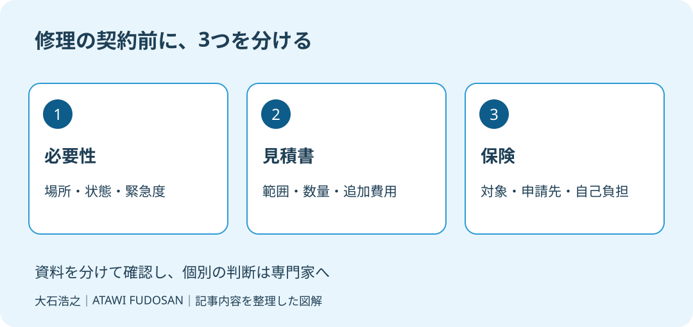

実家に誰も住まなくなってから、「屋根が浮いている」「今なら無料で点検できる」と連絡が来る。離れて暮らす家族には、放っておいてよい話なのか判断しづらいはずです。売却も考えていると、先に直しておくべきかという迷いも重なります。
大石浩之（磐田市／不動産業）です。宅地建物取引士として、私は建物の安全と修理契約の判断を分けて案内したいと考えます。この記事は2026年10月10日に確認した資料をもとに、空き家の修理を頼む前の段取りに絞って書きます。
点検の提案と工事の必要性を分ける
国民生活センターは2026年3月4日の公表資料で、自然災害に関係する住宅修理の相談を紹介しています。災害そのものによるトラブルだけでなく、災害を口実にした点検商法も含まれます。屋根だけではなく、分電盤の点検を持ちかける事例も挙げています。
私は、屋根の話でなければ安心だとは考えません。「無料で見る」という入口と、その後に有料工事を頼む判断は別です。点検を申し出た相手が工事も受けるなら、説明を聞く側は、傷みの説明と営業の提案を切り分けて受け取る必要があります。
注意喚起の良い点は、家族への相談と複数の見積もりを勧めていることです。一人で判断を抱え込まなくてよい。遠方で管理する家族も、電話で工事を承諾する前に、資料を受け取り、別の人に見てもらう時間を確保できます。
そのうえで私は、「見積もりを比べる」だけでは足りないと考えます。片方が一部補修、片方が屋根全体の工事なら、総額の安さだけを比べても判断できません。まず何を直す見積もりなのかを揃える。この一手間を抜かさない案内が必要です。

確認1：どこを、なぜ直すのか
空き家の修理の必要性は、指摘された場所、確認できた状態、放置した場合の説明を分けて整理します。ここからは私の提案する確認手順です。「屋根が危ない」という一言を、建物のどの面の、どの部分の話なのかへ具体化します。
業者から写真を受け取ったら、実家のどこを撮影したものかを尋ねます。撮影日、全景と近景の対応、以前の工事箇所との関係を確認します。写真だけで家族が傷みの程度を判定するのではなく、別の業者や建築士へ説明するための材料にします。
家族が確認するために、屋根へ上ったり、分電盤を分解したりする必要はありません。安全に見える範囲の記録にとどめます。落下物など差し迫った危険が疑われるときは近づかず、安全確保を先に相談します。その対応と、大きな工事を一括で発注することは分けます。
私は、緊急性の程度を現物も見ずに決められません。この迷いは残ります。ただし、「分からないから勧められた工事を全部頼む」という順番にはしません。応急対応が必要か、調査で足りるか、本工事まで必要かを確認したうえで、支出の範囲を決めます。
雨風に備えた普段の管理は、空き家の台風前点検で扱っています。建物を見回ることと、訪問業者との修理契約は、同じ日に決めなくても構いません。
確認2：見積書は同じ範囲で比べる
修理の見積書は、工事名だけでなく施工範囲と数量を揃えて比較します。国民生活センターは複数の事業者から見積もりを取るよう案内しています。私なら、その前に「何を含む金額か」を質問する欄を用意します。
| 確認する欄 | 家族が聞くこと |
|---|---|
| 施工場所・数量 | どの面を、どこまで施工するか |
| 付帯費用 | 足場、撤去、処分などは含まれるか |
| 追加工事 | 追加が必要なとき誰の承諾を得るか |
| 支払い・工期 | いつ、何を確認して支払うか |
私は「一式」という書き方だけで悪い業者だとは判断しません。ただ、説明を求めても範囲が分からないままなら、比較の材料が足りません。契約を急がず、作業内容を書面で出してもらいます。値引きの期限より、工事の中身を理解できることを優先します。
売却予定の家では、見た目を整える工事と、建物を傷めないための修理も分けます。工事代をかけた分だけ高く売れるとは約束できません。売るか残すかが未定なら、その状態で査定担当に相談し、発注前と発注後で何が変わるかを確かめます。
以前の補修と重なる場所なら、工事記録も比較の手掛かりです。住宅履歴情報を査定へ渡す準備のように、日付・場所・工事内容を整理すると、今回の提案について質問しやすくなります。
確認3：保険は保険会社へ確かめる
修理費が保険の対象になるかは、勧誘業者の説明だけで確定しません。国民生活センターは、加入している保険の対象範囲と申請方法の把握を勧めています。同資料には、台風に関する保険申請代行契約を不審に思った相談も載っています。
私なら、保険証券や契約内容の分かる書類を探し、保険会社または契約先の窓口へ連絡するよう案内します。確認したいのは、現在の空き家の状態で契約内容に変更が必要か、今回の損傷は何を提出して判断されるか、という順番です。
「保険が下りるから自己負担はない」という説明と、工事代金を支払う契約は一緒にしません。保険金が出ない場合の工事費、申請代行の費用、解約条件をそれぞれ確認します。修理契約と代行契約が別なら、書面も二つに分けて読みます。
空き家になった後の契約確認は、実家が空いたときの火災保険も参考になります。この記事では、個別の保険金支払いの可否は判定しません。業者の見込みを家族の確定収入として家計表に入れないことです。
磐田・袋井の実家で今日できる確認
磐田市・袋井市の実家を遠方から管理する家族には、勧誘の内容を一枚に記録する方法を提案します。業者名、連絡日、指摘場所、見積額、返答期限を並べます。現地に行く人と支払いを判断する人が違うなら、承諾の窓口を先に決めます。
私はこう考えます。家族で資料を広げる場面なら、最初に置くのは契約書ではなく、家の写真と見積書です。「この場所を今直す理由は何か」を一つずつ確かめたい。保険の話は別の紙に置き、支払いを見込まずに読んでも引き受けられる工事かを考える。これは実際の相談の再現ではなく、家計と段取りを守るために私が勧める進め方です。
国民生活センターの今回の資料には、空き家だけの相談件数や磐田市の発生件数は示されていません。秋の管理に合わせた記事ですが、2026年秋に地域の被害が増えたとは言えません。全国の注意喚起を、家族の確認手順に生かす位置づけです。
- 今日届いた勧誘の書面と写真を保存する。
- 工事範囲の分かる見積書を求める。
- 保険の説明は契約先の窓口に確かめる。
富士ヶ丘サービスでは、磐田・袋井の介護と不動産を一体で考え、家族が困らない売却を支えます。私は、修理の発注より前に判断材料を揃えるよう案内します。契約上の問題は消費生活センターや弁護士へ、建物の状態は建築士などへ確認してください。
磐田市・袋井市では、介護施設の運営から不動産事業を始めた富士ヶ丘サービスのような地域密着の会社に、売却前の資料整理から相談する選択肢があります。